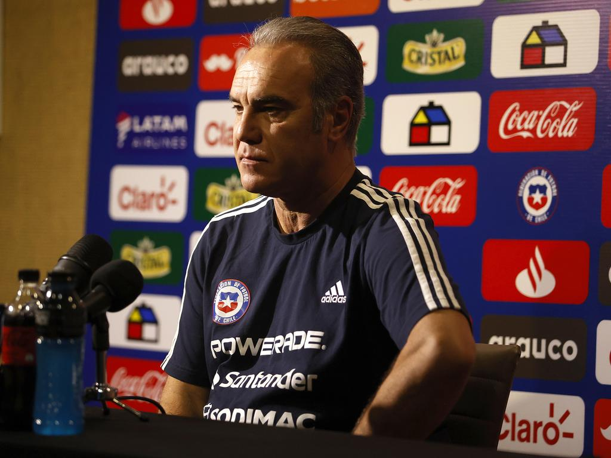
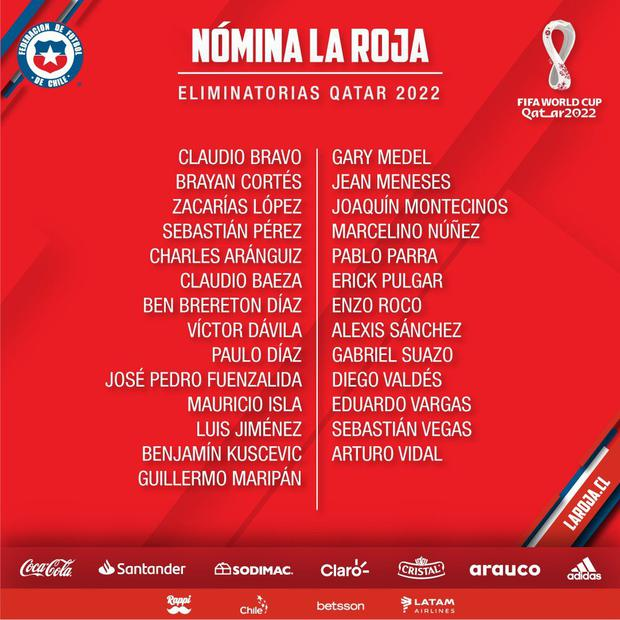
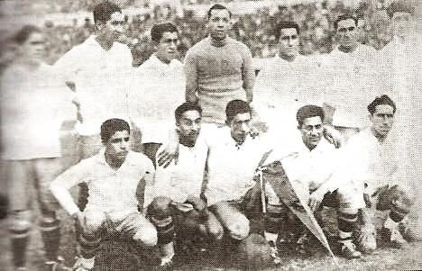
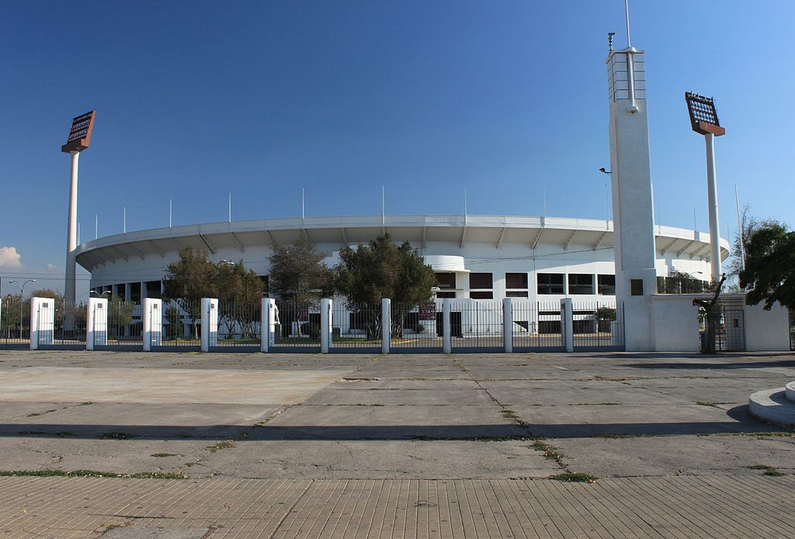
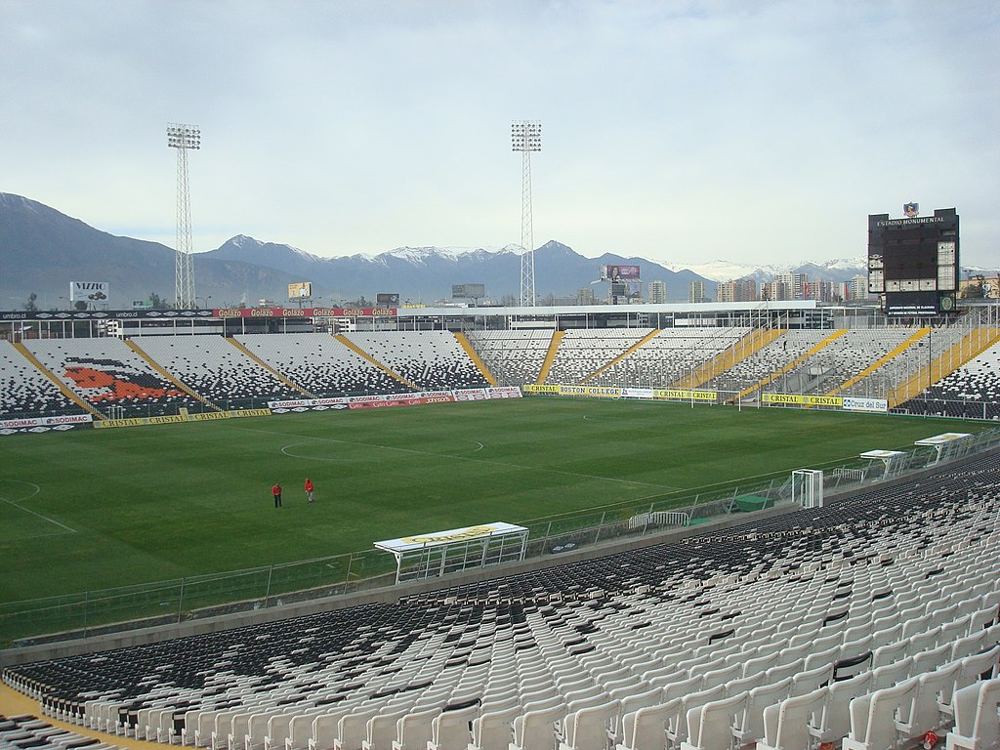
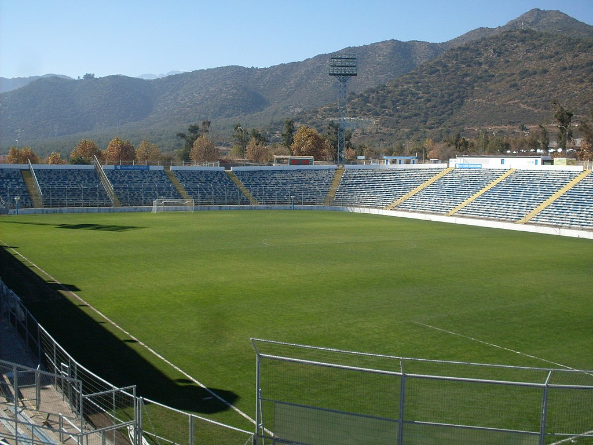
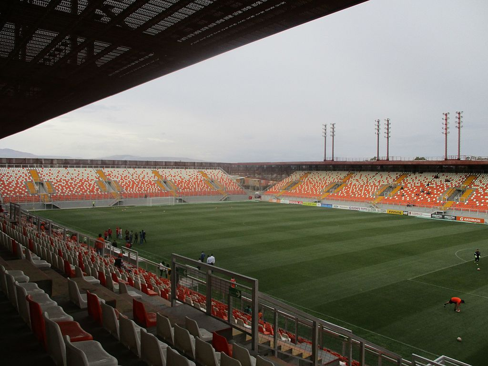
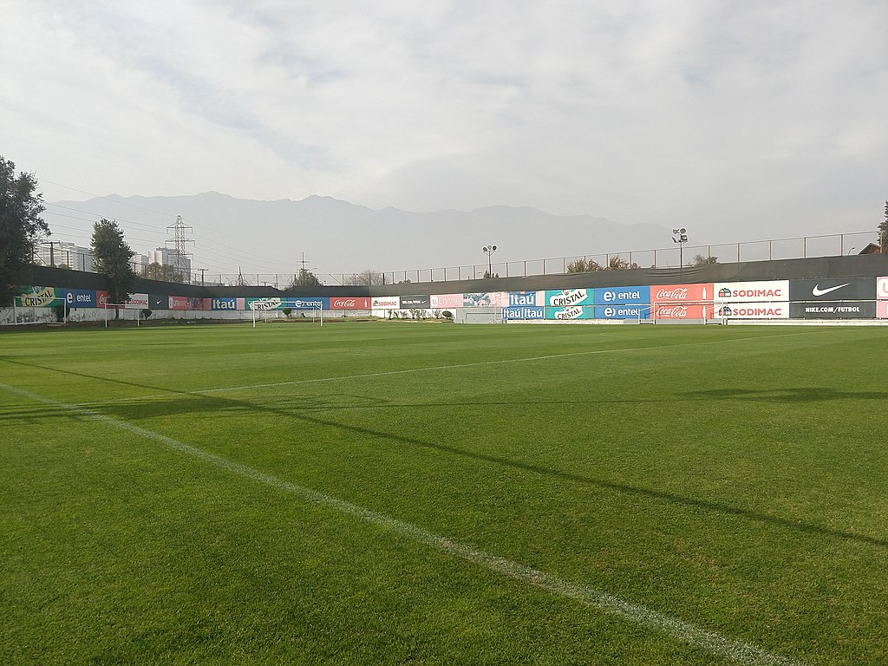

Noticias



Torneo
Eliminatorias Qatar 2022
La Copa Mundial de Fútbol de la FIFA Qatar 2022 será la XXII edición de la Copa de Fútbol masculino organizada por la FIFA. Esta edición se realizará desde el 21 de noviembre al 18 de diciembre de 2022 en Qatar, que consiguó los derechos de organización el 2 de diciembre de 2010. Esta será la tercera vez que la Copa del Mundo de la FIFA se disputará en el continente asiático. Igualmente será el Mundial de mayor tiempo de espera desde 1950 respecto a su edición anterior, ya que se desarrollará entre los meses de noviembre y diciembre de 2022, a diferencia de los meses habituales de junio y julio. De forma paralela será la Copa Mundial de Fútbol más corta desde 1978, pues durará solamente 28 días a diferencia de los 32 días habituales en los últimos campeonatos.
A continuación se muestra la tabla de puntajes para las eliminatoria de Qatar para nuestro territorio:
| Equipo | PJ | PG | PE | PP | PTS |
|---|---|---|---|---|---|
| 1 Brasil | 17 | 14 | 3 | 0 | 45 |
| 2 Argentina | 17 | 11 | 6 | 0 | 39 |
| 3 Uruguay | 18 | 8 | 4 | 6 | 28 |
| 4 Ecuador | 18 | 7 | 5 | 6 | 26 |
| 5 Perú | 18 | 7 | 3 | 8 | 24 |
| 6 Colombia | 18 | 5 | 8 | 5 | 23 |
| 7 Chile | 18 | 5 | 4 | 9 | 19 |
| 8 Paraguay | 18 | 3 | 7 | 8 | 16 |
| 9 Bolivia | 18 | 4 | 3 | 11 | 15 |
| 10 Venezuela | 18 | 3 | 1 | 14 | 10 |
Última Convocatoria
Convocatoria de la selección de Chile
Estos son los convocados de la selección Chilena
- Arqueros:
- Claudio Bravo - Betis (España)
- Brayan Cortés - Colo Colo
- Sebastián Pérez - Universidad Católica
- Zacarías López - Deportes La Serena
- Defensas:
- Paulo Díaz - River Plate (Argentina)
- Mauricio Isla - Flamengo (Brasil)
- Benjamín Kuscevic - Palmeiras (Brasil)
- Guillermo Maripán - AS Mónaco (Francia)
- Gary Medel - Bologna (Italia)
- José Pedro Fuenzalida - Universidad Católica
- Enzo Roco - Elche (España)
- Gabriel Suazo - Colo Colo
- Sebastián Vegas - Monterrey (México)
- Mediocampistas:
- Charles Aránguiz - Bayer Leverkusen (Alemania)
- Claudio Baeza - Toluca (México)
- Marcelino Núñez - Universidad Católica
- Pablo Parra - Puebla (México)
- Erick Pulgar - Galatasaray (Turquía)
- Diego Valdés - Club América (México)
- Arturo Vidal - Inter de Milán (Italia)
- Delanteros:
- Ben Brereton Díaz - Blackburn Rovers (Inglaterra)
- Víctor Dávila - León (México)
- Luis Jiménez - Palestino
- Jean Meneses - León (México)
- Joaquín Montecinos - Tijuana (México)
- Alexis Sánchez - Inter de Milán (Italia)
- Eduardo Vargas - Atlético Mineiro (Brasil)

Historia

La Roja
La selección de fútbol de Chile, también conocida como la Roja, término afianzado en la década de 1980, es la tercera selección nacional más antigua de América y una de las veinte en el mundo. Disputó su primer partido internacional el 27 de mayo de 1910 ante Argentina. Su sede local es el Estadio Nacional Julio Martínez Prádanos, ubicado en la comuna de Ñuñoa en la ciudad de Santiago. La Roja entrena y se concentra en la misma ciudad, en el Complejo Deportivo Juan Pinto Durán, en la comuna de Macul.
Instalaciones

Estadio Nacional de Chile Julio Martinez Prádanos
Conocido como «el Coloso de Ñuñoa», es la casa de la selección chilena en sus partidos como local. Su primer partido en ese recinto ocurrió el 26 de febrero de 1939. Desde 1954, ha sido la principal sede de la Roja para los partidos de clasificatorias a la Copa Mundial de Fútbol.

Estadio Monumental David Arellano
Desde fines de los años 1990, el recinto de Colo-Colo ha sido escenario ocasional de partidos de la Roja. Su primer partido allí fue el 29 de abril de 1997, cuando venció a Venezuela por 6-0 en un partido válido por las clasificatorias para Francia 1998.

Estadio San Carlos de Apoquindo
A mediados de 2021 y tras los arreglos del Estadio Nacional para los Juegos Panamericanos de 2023, el estadio de la Universidad Católica fue escogido por la ANFP para recibir partidos de la Clasificatorias. Recibió a las selecciones de Bolivia, Paraguay, Venezuela y Ecuador.

Estadio Zorros del Desierto
El recinto de Calama fue el escogido para disputar los partidos por primera vez partidos para las Clasificatorias para el Mundial de 2022, buscando aprovechar la ventaja deportiva por las condiciones climáticas y geográficas.

Complejo Deportivo Juan Pinto Durán
El Complejo Deportivo Juan Pinto Durán es el centro de entrenamiento y concentración de la selección chilena. Fue pedido por el entrenador Fernando Riera e inaugurado en 1961 en la comuna de Macul, en Santiago.
Premios
Premios
¡Recuerda los grandes triunfos de la Roja a lo largo de la historia!
| Torneo | Lugar | Años |
|---|---|---|
| Copa Mundial de Fútbol | Tercer Lugar | 1962 |
| Copa FIFA Confederaciones | Subcampeón | 2017 |
| Copa América | Campeón | 2015, 2016 |
| Subcampeón | 1955, 1956, 1979, 1987 | |
| Tercer Lugar | 1926, 1941, 1945, 1967, 1991 | |
| Panamericano de Fútbol | Subcampeón | 1952 |
| Copa del Pacífico | Campeón | 1965, 1968, 1983, 1988, 2006, 2012 |
| Copa Canadá | Campeón | 1995 | China Cup | Campeón | 2017 |